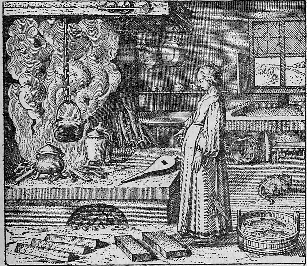

A woman works at a cooking fire or stove, stirring a pot or vessel containing a white substance — the white lead obtained through the preceding albedo operations. The domestic cooking scene parallels Emblem III's washerwoman: alchemical processes rendered as women's household labor. Kitchen implements and vessels surround her, and steam or vapor rises from the cooking vessel.
When you have obtained the white lead, then do woman's work, that is to say: cook.
Maier instructs that once the white lead (the product of the albedo) has been obtained, the alchemist must perform 'women's work' — that is, cook the substance with steady, patient heat. He develops cooking as the central metaphor for the post-albedo operations, arguing that the white substance must be slowly heated and matured, just as food is transformed by cooking from raw to nourishing. The discourse emphasizes patience and temperature control: the philosophical substance must simmer, not boil. Maier draws on the herms — three-forked road markers — as guides that show the way to straying travelers, an allegory for the textual guideposts left by earlier alchemists.
Emblem XXII bears the motto: "When you have obtained the white lead, then do woman's work, that is to say: cook."
Maier instructs that once the white lead (the product of the albedo) has been obtained, the alchemist must perform 'women's work' — that is, cook the substance with steady, patient heat. He develops cooking as the central metaphor for the post-albedo operations, arguing that the white substance must be slowly heated and matured, just as food is transformed by cooking from raw to nourishing. The discourse emphasizes patience and temperature control: the philosophical substance must simmer, not boil.
De Jong's source-critical analysis identifies the textual traditions Maier draws upon for this emblem.
The discourse draws on alchemical sources: Lambsprinck, De Lapide Philosophico, Turba Philosophorum.
Hereward Tilton: Tilton discusses discourse 22's quotation of Rhazes: Saturn opens the gates of knowledge and lead is the father of all metals. Saturn/lead as the materia artis is the indispensable first step on Maier's alchemical ladder, connecting to Saturnus Sterculius — the god of manure, the thing of little value trampled in the dungheap.
H.M.E. de Jong: De Jong traces the golden rain motif to the Turba Philosophorum and identifies Socrates as the speaker in the source text. She demonstrates how Maier connects the alchemical production of white lead to the Hermetic tradition of herms as guideposts, and how the command to 'do woman's work' (cooking) signals the transition from albedo to the sustained heating of the citrinitas.
Figure: Kronos / Saturn (Saturnus)
Source_Text: Rosarium Philosophorum, Turba Philosophorum
Tilton discusses discourse 22's quotation of Rhazes: Saturn opens the gates of knowledge and lead is the father of all metals. Saturn/lead as the materia artis is the indispensable first step on Maier's alchemical ladder, connecting to Saturnus Sterculius — the god of manure, the thing of little value trampled in the dungheap.
Citation: Ch. II, pp. 41-42
De Jong traces the golden rain motif to the Turba Philosophorum and identifies Socrates as the speaker in the source text. She demonstrates how Maier connects the alchemical production of white lead to the Hermetic tradition of herms as guideposts, and how the command to 'do woman's work' (cooking) signals the transition from albedo to the sustained heating of the citrinitas.